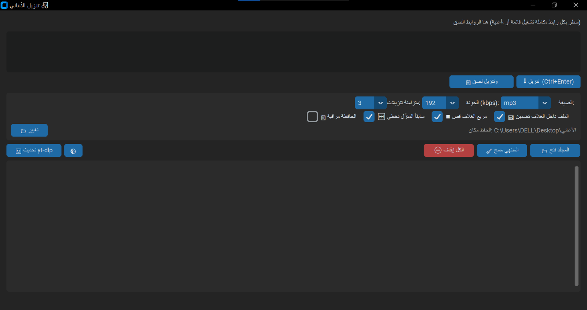
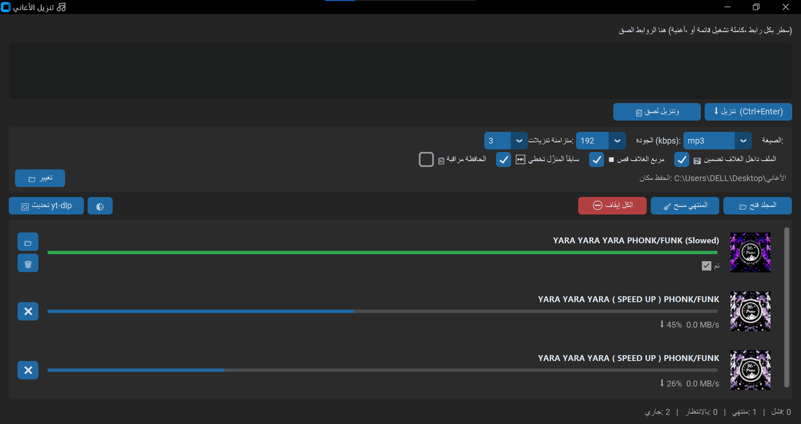
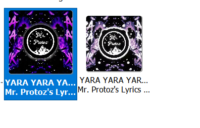

انزّل أغانيك مع الغلاف.
بضغطة وحدة.
الصق رابط أغنية أو قائمة تشغيل كاملة، والبرنامج بينزّلها بصيغة mp3 (أو m4a / flac / mp4) ومعها غلاف الأغنية مضمّن داخل الملف نفسه، فبيظهر بالمشغّل وبالموبايل وبكل مكان.



أغلب الأدوات بتنزّل الصوت وبتنسى الغلاف، أو بتحطه كما هو بصيغة ما بتفهمها المشغّلات. هون الغلاف بيمر بأربع خطوات:
تقدر تطفي القص المربع أو تضمين الغلاف من الإعدادات.
- ثبّت بايثون من python.org، وفعّل خيار Add Python to PATH أثناء التثبيت.
-
ثبّت المكتبات
افتح PowerShell ونفّذ:
pip install -U yt-dlp customtkinter pillow mutagen -
ثبّت ffmpeg
ضروري لتحويل الصوت وتضمين الغلاف:
winget install ffmpeg - شغّل البرنامج نزّل الملف من الأعلى وانقر عليه مرتين. إذا ما اشتغل بعد تثبيت ffmpeg، أغلقه وافتحه من جديد.
شو أوفر مكان أحفظ فيه الأغاني؟
افتراضياً مجلد «الأغاني» على سطح المكتب، وتقدر تغيّره من زر «تغيير» وبينحفظ.
التنزيل وقف أو فشل، شو أعمل؟
أول شي اضغط «تحديث yt-dlp» من البرنامج، لأن المواقع بتغيّر طريقتها وبتنكسر النسخ القديمة. إذا استمرت المشكلة اضغط على الصف الفاشل لتشوف رسالة الخطأ كاملة، وابعتها لي.
الغلاف ما ظهر بصيغة flac؟
تضمين الغلاف بـ flac يحتاج مكتبة mutagen: pip install mutagen.
بيشتغل على ماك أو لينكس؟
مصمم لويندوز. الكود بايثون عادي وقد يشتغل على غيره، بس ما جرّبته.
هل في قيود قانونية؟
البرنامج واجهة لأداة yt-dlp المفتوحة المصدر. استخدمه فقط لتنزيل محتوى عندك حق تنزيله، وانت المسؤول عن استخدامك له.